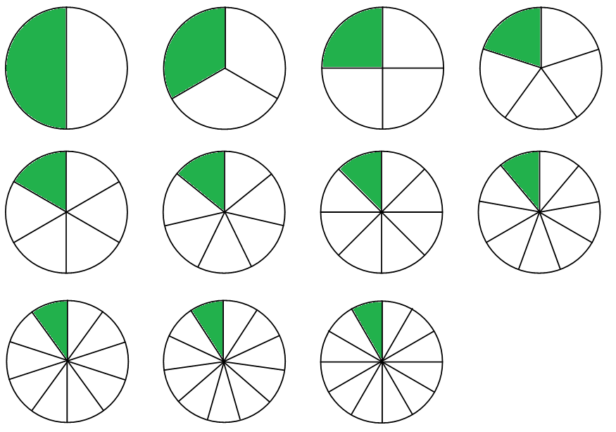

3 ÷ 4 = 3/4 = (−3)/(−4) = (3x)/(4x)
x/2 + x/3 = 3x/6 + 2x/6 = 5x/6
(2/3)x + 1 = 7 → x = 9
Those three lines are fraction algebra in action. The first says one value can wear many names — even with negative signs and a variable x. The second adds two fractions whose bottoms don't match — with a letter riding on top. The third is an equation: a puzzle that asks "what number is x?" — and a fraction sits right inside it. Right now some of that might look mysterious. That's okay! By the end of this lesson, you'll be able to do all three — and you'll know exactly why each move works.
This lesson is the honors climb up the fractions mountain: same ideas, much higher view. We'll put negative numbers inside every operation, add variables (letters that stand for numbers), exponents, equations, inequalities, functions, and even a peek at systems of equations and quadratics. Every step will be shown on its own line, every new word defined the moment it appears, and every rule explained — never just stated.
Why do people care? Because fractions are the engine under almost all of algebra. Slope is a fraction (rise ÷ run). Probability is a fraction (favorable ÷ total). Speed is a fraction (distance ÷ time). And when a scientist or an engineer solves an equation, half the battle is usually fraction arithmetic.
In this lesson, you will:
- 1.Learn what a fraction really is — division wearing a bar — and meet the rational numbers
- 2.Learn why one fraction can wear many names — and simplify any fraction (even one with x in it) in one move
- 3.Learn to compare any two fractions in one step with cross-multiplication — and solve inequalities (with the famous flip!)
- 4.Learn to add and subtract fractions with negative signs and variables on top
- 5.Learn to multiply fractions with signs, variables, and exponents — plus the distributive property
- 6.Learn to divide fractions with keep, change, flip — and prove why the flip works
- 7.Learn to solve equations with fractions inside them — and meet function notation f(x)
- 8.Learn the six classic mistakes (now with algebra versions) so you never make them
- 9.Practice with 100 problems at the end — all the way up to systems of equations!
How to use this lesson: Read the sections in order — each one is built on the one before it. Every section starts with the key idea you'll learn in it. Take your time, work every example with a pencil alongside the text, and try every "Your Turn" box before reading its answer. Ready? Let's climb!
📸 Pictures
A "four seasons" pizza has 4 parts with different toppings, so each part is about 1/4 of the pizza. Two parts together make 2/4, which is the same as 1/2! See source ↓

Fraction circles from 1/2 all the way to 1/12. Notice that the more slices you cut, the smaller each slice gets! See source ↓
🗺️ Your lesson map
Fractions Are Division — Meet the Rational Numbers 🧩Lesson 2
Equivalent Fractions — Simplify Anything (Even with x!) 🎯Lesson 3
Comparing Fractions — Cross-Multiplication and the Inequality Flip 🔍Lesson 4
Adding and Subtracting — LCD, Negatives, and Variables ⚡Lesson 5
Multiplying — Straight Across, with Exponents Peeking In 🌟Lesson 6
Dividing — Keep, Change, Flip (and This Time We Prove It) 🛠️Lesson 7
Fractions in Action — Mixed Numbers, Equations, and f(x) ⚠️Lesson 8
Watch Out! Common Mistakes (Honors Edition) 🧠Lesson 9
Review — The Big Picture (Plus Capstones) 🏋️Practice Problems
100 problems to try 🏆Quiz
Test yourself: new questions every time!
📚 Picture Sources
- Picture 1 · Pizza quattro stagioni. By Rkolarsky. CC BY-SA 3.0. From Wikimedia Commons: https://commons.wikimedia.org/wiki/File:Pizza_quattro_stagioni.jpg
- Picture 2 · Fraction Circles Shaded. By Zapotz. CC0. From Wikimedia Commons: https://commons.wikimedia.org/wiki/File:Fraction_Circles_Shaded.png